CVPR 2024
Learning CNN on ViT:
A Hybrid Model to Explicitly Class-specific Boundaries for Domain Adaptation
Ba Hung Ngo1,*
,
Nhat-Tuong Do-Tran2,*
,
Tuan-Ngoc Nguyen3,
Hae-Gon Jeon4,
Tae Jong Choi1,
1Graduate School of Data Science, Chonnam National University, South Korea
2Department of Computer Science, National Yang Ming Chiao Tung University, Taiwan
3Digital Transformation Center, FPT Telecom, VietNam, 4AI Graduate School, GIST, South Korea
Abstract
Most domain adaptation (DA) methods are based on either a convolutional neural networks (CNNs) or a vision transformers (ViTs). They align the distribution differences between domains as encoders without considering their unique characteristics. For instance, ViT excels in accuracy due to its superior ability to capture global representations, while CNN has an advantage in capturing local representations. This fact has led us to design a hybrid method to fully take advantage of both ViT and CNN, called Explicitly Class-specific Boundaries (ECB). ECB learns CNN on ViT to combine their distinct strengths. In particular, we leverage ViT's properties to explicitly find class-specific decision boundaries by maximizing the discrepancy between the outputs of the two classifiers to detect target samples far from the source support. In contrast, the CNN encoder clusters target features based on the previously defined class-specific boundaries by minimizing the discrepancy between the probabilities of the two classifiers. Finally, ViT and CNN mutually exchange knowledge to improve the quality of pseudo labels and reduce the knowledge discrepancies of these models. Compared to conventional DA methods, our ECB achieves superior performance, which verifies its effectiveness in this hybrid model.
Method
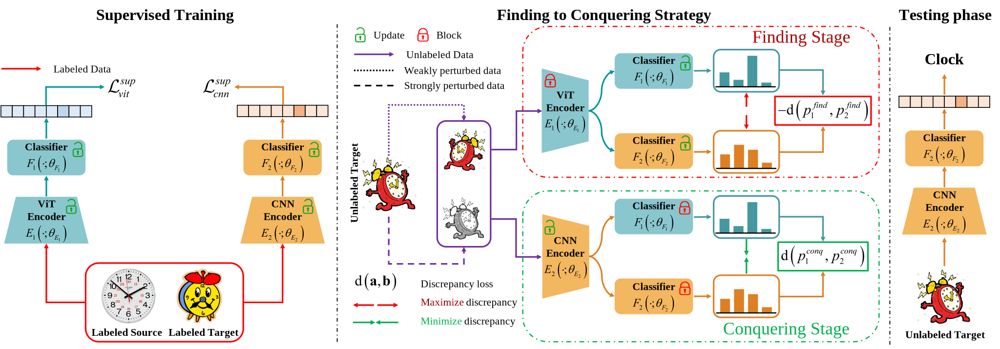An overall framework of the proposed Finding to Conquering strategy. We use ViT to build E1 that drives two classifiers F1 and F2 to expand class-specific boundaries comprehensively. Besides, we select CNN for the second encoder E2 to cluster target features based on the boundaries identified by ViT. These encoders use two classifiers F1, F2.
Results SSDA Setting
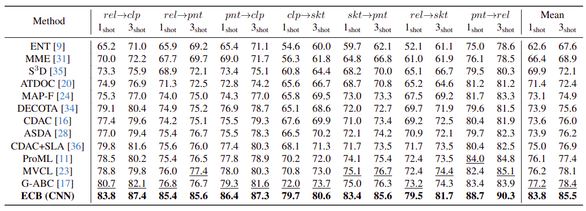The CNN branch of our ECB method outperforms all prior methods. In comparison to the nearest-competitor method, G-ABC , the ECB (CNN) achieves an impressive maximum performance increase of +9.3% in the skt→pnt task for 3-shot learning. Even in the more restrictive 1-shot learning, the ECB method demonstrates robust performance, showing a increase of +3.1% in the rel→clp task. On average, the ECB method validates a performance improvement of +6.6% in the 1-shot setting and +7.1% in the 3-shot setting.
Results UDA Setting
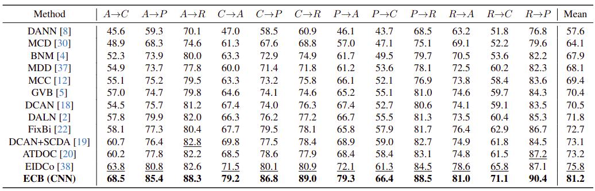Our approach has recorded accuracy enhancements of +7.7%, +8.1%, and +7.2% for the C→A, C→R, and P→A tasks, respectively, surpassing the results of the second-best. In addition, our method has achieved an impressive average classification accuracy of 81.2%, showing a remarkable margin of +5.4% over the nearest-competitor EIDCo.
Visualize T-SNE
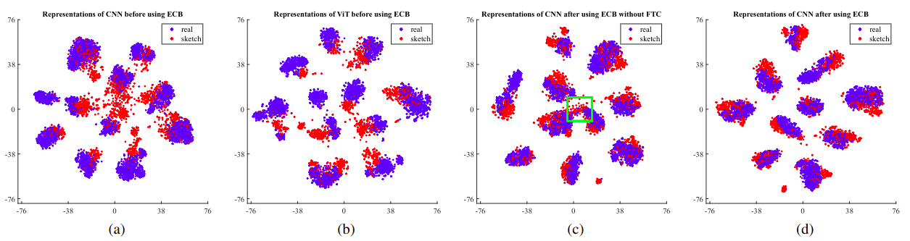We visualize feature spaces for the rel→skt task on DomainNet in the 3-shot using t-SNE. Figures (a) and (b) illustrate the features obtained by CNN and ViT branches before adaptation. Figures (c) and (d) showcase the distribution changes of the CNN branch depending on the presence of the FTC strategy when implementing our ECB method.
Visualize GRAD-CAM
| Bird | CNN (Before) | ViT (Before) | CNN (After) | ViT (After) |
|---|---|---|---|---|
| 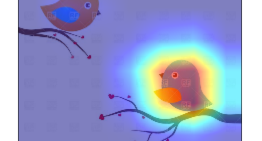 | 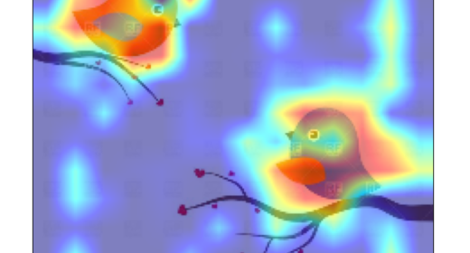 | 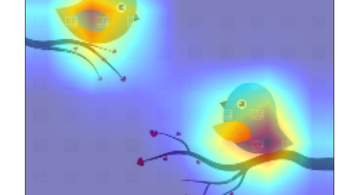 | 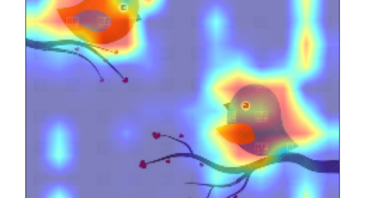 | |
| Cannon | CNN (Before) | ViT (Before) | CNN (After) | ViT (After) |
| Cactus | CNN (Before) | ViT (Before) | CNN (After) | ViT (After) |
| Peanut | CNN (Before) | ViT (Before) | CNN (After) | ViT (After) |
| 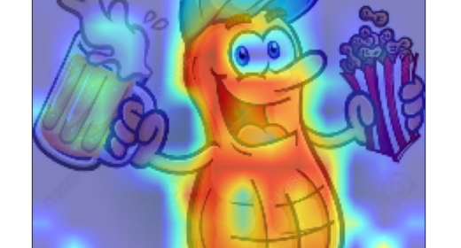 |  |
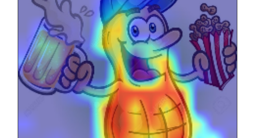 | ||
| Canoe | CNN (Before) | ViT (Before) | CNN (After) | ViT (After) |
| 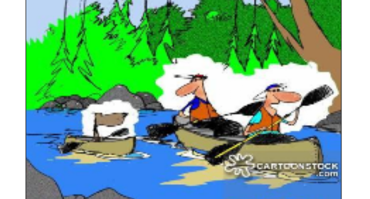 | 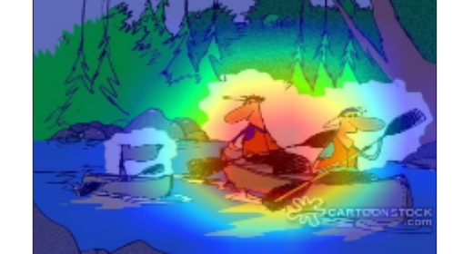 |  |
||
| Ant | CNN (Before) | ViT (Before) | CNN (After) | ViT (After) |
| 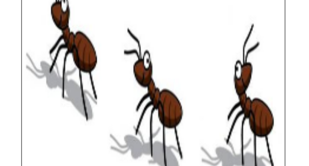 | 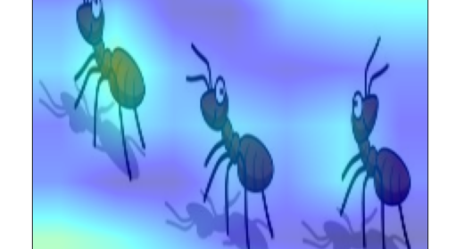 | 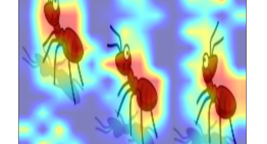 | 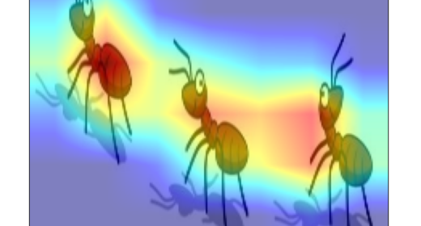 | 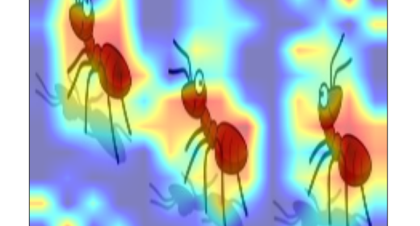 |
BibTeX
@inproceedings{ECB,
title={Learning CNN on ViT: A Hybrid Model to Explicitly Class-specific Boundaries for Domain Adaptation},
author={Ba Hung Ngo, Nhat-Tuong Do-Tran, Tuan-Ngoc Nguyen, Hae-Gon Jeon, Tae Jong Choi},
booktitle={Proceedings of the IEEE/CVF Conference on Computer Vision and Pattern Recognition (CVPR)},
year={2024}
}